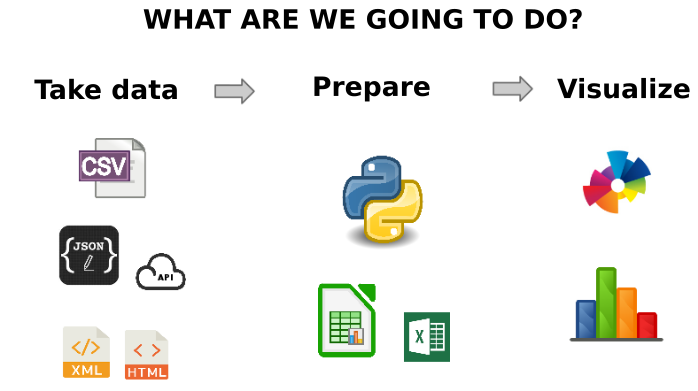

Overview¶
To start with we will spend a couple of words on the approach and the goals of the book, then we will deep dive into the code.

Chapters¶
The tutorial mostly deal with fundamentals of PYthon 3, data analysis (intended more like raw data processing than statistics) and some applications (dashboard, database, ..)
What are *not* about:
object oriented programming theory
algorithms, computational complexity
performance
no terabytes of data …
advanced debugging (pdb)
testing is only mentioned
machine learning
web development is only mentioned
Why Python?¶
Easy enough to start with
Versatile, very much used for
scientific calculus
web applications
scripting
widespread both in the industry and research environments
Tiobe Index
Licence open source & business friendly
translated: you can sell commercial products based on Python without paying royalties to its authors
References¶
Altro materiale: Citiamo i seguenti due libri, entrambi dall’approccio discorsivo e gratuiti disponibili sia online che in pdf.
Part A Resources¶
Think Python, by Allen Downey¶
Talks a lot, step by step, good for beginners
License: Creative Commons CC BY Non Commercial 3.0 as reported in the original page
Dive into Python 3, by Mark Pilgrim¶
More practical, contains more focused tutorials (i.e. manage XML files)
Licence: Creative Commons By Share-alike 3.0 as reported at the bottom of book website
Approach and goals¶
If you have troubles with programming basics:
Exercise difficulty: ✪ , ✪✪
Other useful stuff can be found in the book ‘Think Python’
If you already know how to program:
Exercise difficulty: ✪✪✪, ✪✪✪✪
Read Python Quick Intro and then go directly to Part B - Data Analysis
other useful things can be found in the book Dive into Python 3
Doesn’t work, what should I do?¶
While programming you will surely encounter problems, and you will stare at mystierious error messages on the screen. The purpose of this book is not to give a series of recipes to learn by heart and that always work, as much as guide you moving first steps in Python world with some ease. So, if something goes wrong, do not panic and try following this list of steps that might help you. Try following the proposed order:
If in class, ask professor (if not in class, see last two points).
If in class, ask the classmate who knows more
Try finding the error message on Google
remove names or parts too specific of your program, like line numbers, file names, variable names
Stack overflow is your best friend
Look at Appendix A - Debug from the book Think Python
Gather some courage and ask on a public forum, like Stack overflow or python-forum.io - see how to ask questions.
How to ask questions¶
IMPORTANT
If you want to ask written questions on public chat/forums (i.e. like python-forum.io DO FIRST READ the forum rules (see for example How to ask Smart Questions
In substance, you are always asked to clearly express the problem circumstances, putting an explicative title to the post /mail and showing you spent some time (at least 10 min) trying a solution on your own. If you followed the above rules, and by misfortune you still find programmers who use harsh tones, just ignore them.
Installation and tools¶
If you still haven’t installed Python3 and Jupyter, have a look at Installation
Let’s start !¶
If you already have some programming skill: you can look Python quick start
If you don’t have programming skills: got to Tools and scripts